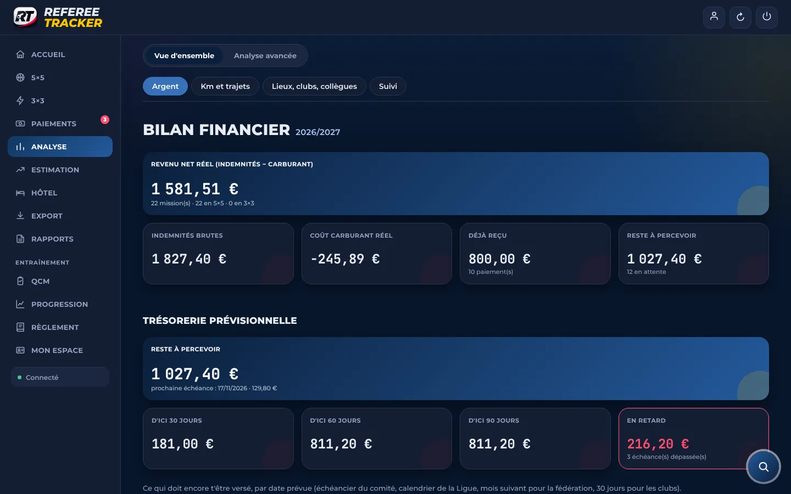

Home › Guides › Planning your season
GuideBasketball referee: planning your season without a spreadsheet
Appointments, travel, payments, training: the simple method to keep track of everything during a refereeing season, and what an app can do for you.

1. Keep all your appointments in one place
A season often means dozens of appointments, plus their changes and cancellations. First habit: gather them in one place. A forwarding rule in your mailbox (Gmail, Outlook, Orange…) can automatically send each appointment to a dedicated folder or address.
firstname@referee-tracker.fr: each game is created on its own, and updated if it is changed or cancelled.2. Prepare each trip
- Meeting time and exact address of the venue.
- Travel time, with some slack for traffic and parking.
- Your partner's name and number, so you can travel together when possible.
- For long trips: hotel, meals, return times.
3. Keep track of the money
For each game: the expected match fee, the payer, the expected payment date, then the amount actually received. Late payments stand out straight away when everything is in one place. The full calculation is in our guide to basketball referee match fees.
4. Improve
- Keep your assessment reports and note the points to work on that keep coming back.
- Revise the rules in short, regular sessions rather than the night before an exam.
- After a tough game, go back over the play with a cool head: what you called, what you should have called, the relevant article.
5. Review your season
At the end of the season: number of games, kilometres driven, match fees received and the real cost of your trips. This review helps you decide your availability for the next season.
What an app changes
| Task | By hand | With Referee Tracker |
|---|---|---|
| Log an appointment | Copy it into a spreadsheet | Automatic |
| Work out the match fee | Rate scale + road map | Automatic, to the cent |
| Know who owes you what | Keep a spreadsheet by hand | "Who owes you what" screen |
| Never forget a game | Calendar filled in by hand | Synced calendar and reminders |
| Revise the rules | Paper rulebook | Quizzes and situation analysis |
6. Getting ready for next season
The review is mostly there to help you decide. How many games do you want to referee? How far are you willing to travel? Which weekends do you want to keep free? Also write down the development goals set by your referee coach: they will guide your revision and the games you review on video.
The mistakes that cost the most
- Not logging a game: with no record, you can't check it was paid.
- Forgetting cancellations: a cancelled game sometimes stays in a spreadsheet and skews the totals.
- Ignoring the real cost of the trip: the mileage allowance doesn't always cover fuel.
- Chasing too late: a payment six months overdue is much harder to trace.
Read next
Let the app do the maths for you.
Every appointment you forward becomes a game with its match fee, its expected payment date and its reminders.
Request my access